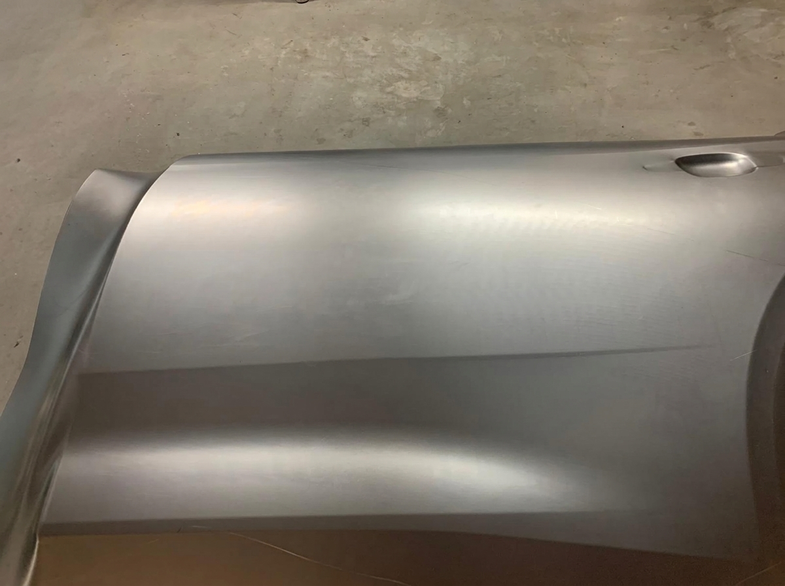
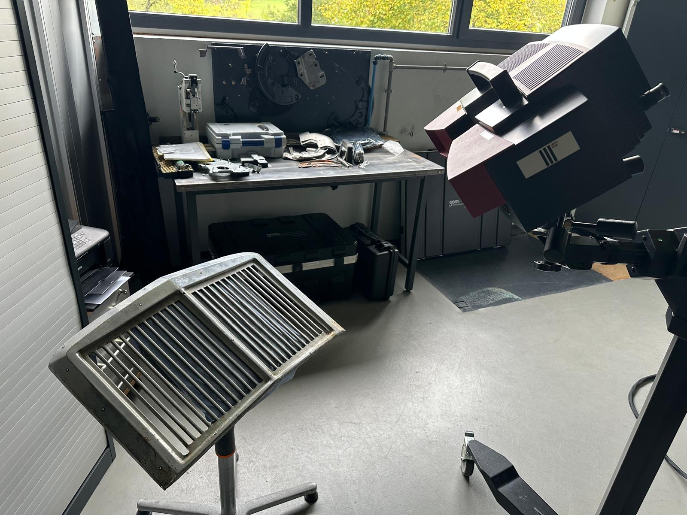
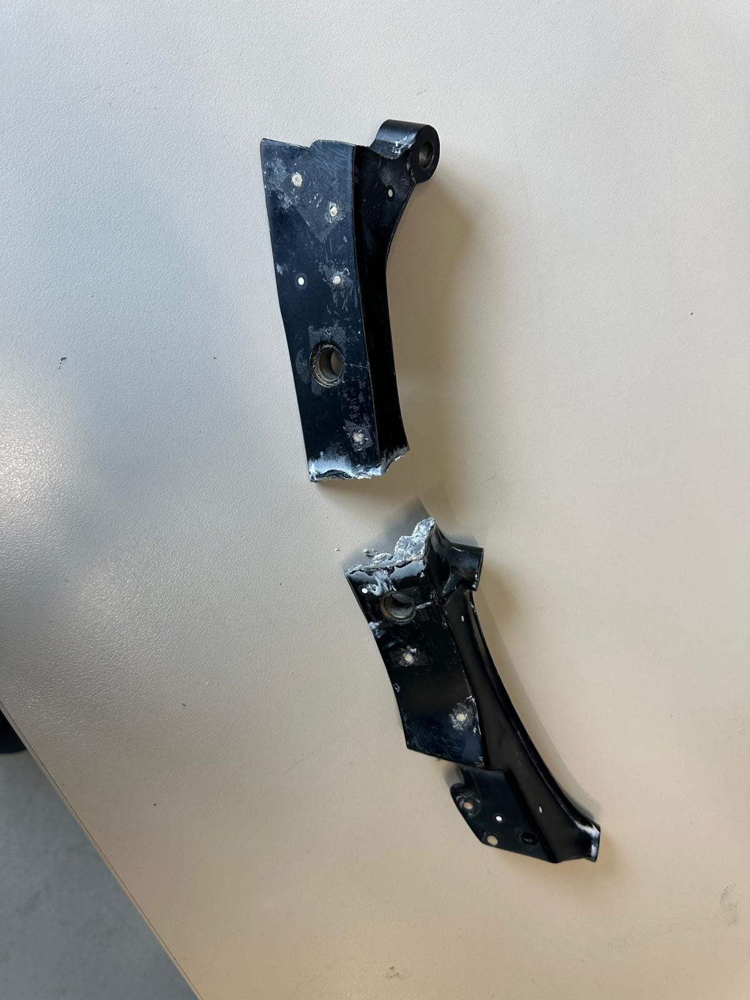
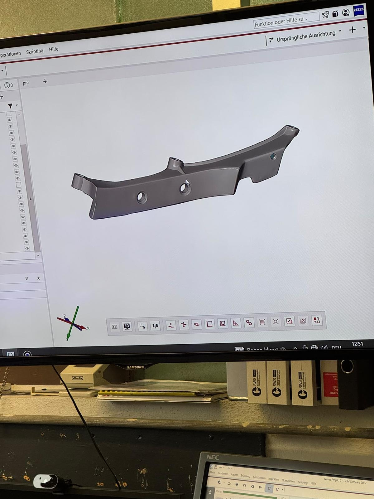
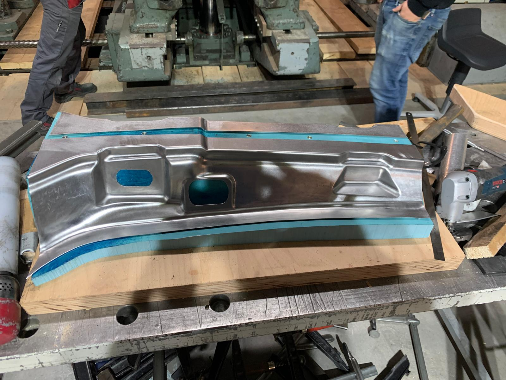

Alle Blechteile in schneller Zeit.
Die Lücke zwischen Serienwerkzeug & Manufaktur.
Unsere Antwort: Schneller 5-Achs-Werkzeugbau und spezialisierte Umformtechnologien für das gesamte Blechteilespektrum – vom kleinsten Halter bis zum komplexen Karosseriebauteil in Losgrößen von 1 bis 500 Stück.
 CNC-FORM- & BIEGEWERKZEUGE · SONDERBAU FRONTGRILL
CNC-FORM- & BIEGEWERKZEUGE · SONDERBAU FRONTGRILL
Beulsteif. Formstabil.
Gezielt verfestigt & OEM-Materialkompetenz.
Überragende Beulsicherheit gegen Dellen und Verzug bei Montage, Erprobung oder Transport. Thermisches Ploppen bei Sonneneinstrahlung wird eliminiert – für makellose, spiegelnde Reflexionslinien ohne Spachtelbedarf.
 BIAXIALER STRECKZUG
BIAXIALER STRECKZUG
 HYDRAULISCHE SPANNBACKEN
HYDRAULISCHE SPANNBACKEN

MAKELLOSES CLASS-A FLÄCHENFINISHGegenläufige Türen in Kleinstserie.
Umgebauter Türeinstieg & Fondtüren für Premiumkunden.
In unserer Manufaktur zu besichtigen: Die Werkzeugformen für die Türen und der passende Einstiegs-Säulenumbau stehen direkt vor Ort in Bretzfeld zur Begutachtung bereit.
 KLEINSERIE · REVERSE COACH DOORS
KLEINSERIE · REVERSE COACH DOORS
Vom OEM-CAD zum geprüften Bauteil.
Nahtloser Workflow nach Industriestandards.


Vom Clay-Designmodell oder Muster
zum Digitalen Zwilling und zum neuen Teil.

Referenzpunktierung
Optische Marken auf Design-, Clay- oder Erprobungsmodellen sichern die hochgenaue 360°-Geometrieerfassung selbst an komplexen Kanten.

Spielfreie Ausrichtung
Präzises Ausrichten und Fixieren des modellierten Teils oder Musters zur maßhaltigen Erfassung aller Schnittstellen und Bemaßungen.

ZEISS GOM Digitaler Zwilling
Rückführung der Punktwolke in einen sauberen digitalen Zwilling (CAD-Datensatz) – die direkte Basis für Werkzeugbau und das neue Bauteil.
Vom CNC-Ziehwerkzeug
zum maßhaltigen Strukturbauteil.
5-Achs CNC-Ziehwerkzeug
Präzisionsgefräster Ureol-Formklotz mit 100% CAD-Flächentreue sowie gefrästen Sicken- und Referenzbohrungen.

Handgeführtes Umformen
Gezieltes Einformen, Abkanten und Anpassen der Kantenradien unter präziser Schraubzwingen-Fixierung auf dem Ziehwerkzeug.

Konturiertes Strukturteil
Laserbeschnittenes, maßhaltiges Strukturbauteil mit saugender Passung auf dem Prüf- und Ziehwerkzeug.
Ihr Partner für Prototypen
und Sonderbauten.
Besuchen Sie unsere Manufaktur: Begutachten Sie unsere Streckziehpresse, Ureol-Werkzeuge und realen Fertigungsbeispiele direkt vor Ort in Bretzfeld.
 MARCO SCHÄFER · INHABER & KAROSSERIEBAUMEISTER
MARCO SCHÄFER · INHABER & KAROSSERIEBAUMEISTER